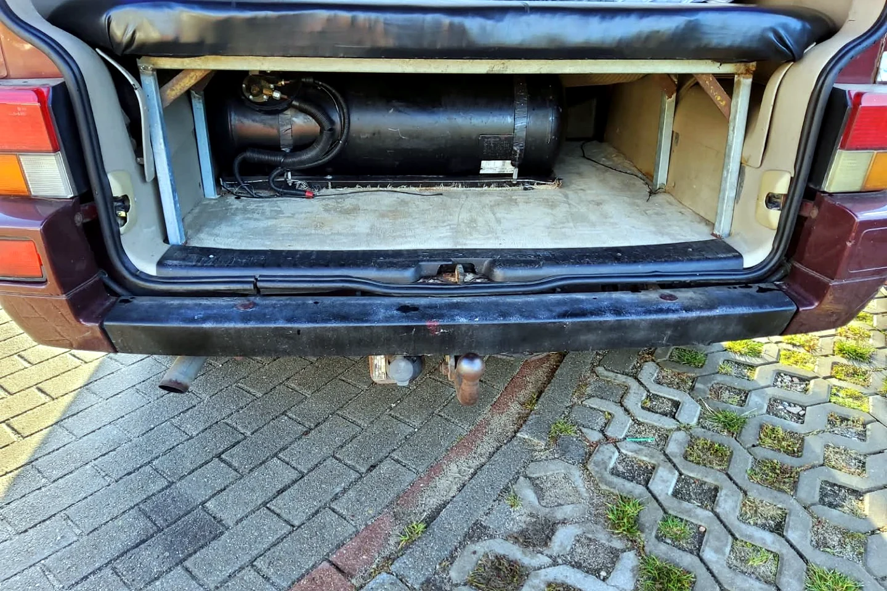

Ancien système de gaz retiré du coffre — transformé en espace pour roues de secours

Le rouge pouvait fonctionner à l’essence et à l’essence. Pratique pour le ravitaillement — moins pratique était l’espace occupé par l’ancien système de gaz dans le coffre. Une grande partie de l’arrière précieux fut définitivement bloquée en conséquence. Pour un camping-car dans lequel je voulais vivre et voyager, ce n’était pas une bonne solution sur le long terme.
Le plan : réservoir d’essence hors service
Sous le véhicule se trouvait l’espace pour la roue de secours. C’est exactement là où la centrale à gaz était censée se déplacer. L’objectif était clair : regagner de l’espace de rangement au sommet du coffre sans renoncer au fonctionnement du moteur au gaz. Sur les photos, on peut voir les deux faces de l’histoire — le réservoir à l’arrière, puis les travaux au sol ou au nouvel emplacement d’installation.
Une telle conversion est bien plus que simplement « dévisser le réservoir et le réparer ailleurs ». La fixation, le câblage, la protection contre les dommages, la distance aux sources de chaleur, la garde au sol, la corrosion, l’étanche, ainsi que les tests requis doivent être compatibles. Il faut également clarifier ce qui arrive à la roue de secours lorsque son espace est réutilisé.
Ce que le coffre gratuit a apporté
Après la rénovation, la différence fut immédiatement perceptible. Là où auparavant la technologie dominait l’espace, les bagages et l’équipement pouvaient être rangés de manière plus judicieuse. Avec le niveau de rangement supplémentaire, l’arrière est enfin devenu ce dont j’avais besoin : un espace de rangement utilisable plutôt qu’un compromis autour du réservoir.
Chaque rénovation a son inconvénient
Plus d’espace en haut signifie une responsabilité en bas. Le nouvel emplacement d’installation doit être pris en compte à chaque inspection. L’absence de roue de rechange ou d’hébergement alternatif fait également partie de votre planification de voyage. C’est exactement ce que j’ai appris pendant l’expansion : il y a rarement une solution sans conséquences. Les bonnes solutions sont celles dont les conséquences sont connues et acceptées.
Pour mon Red, la conversion a tout de même été une étape importante. La technologie faisait partie intégrante du véhicule, mais elle ne contrôlait plus tout mon coffre. Et dans un petit camping-car, un espace récupéré vaut presque autant qu’une pièce supplémentaire.
À bientôt et bon voyage toujours,
votre Tussy 💛